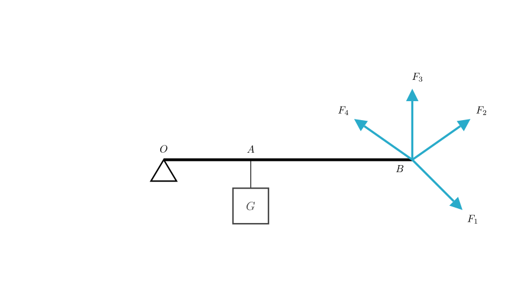
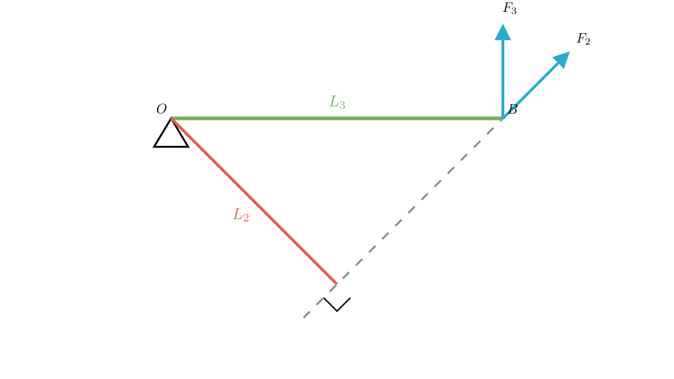

Problem Statement: As shown in the figure, the lever $OAB$ can rotate around point $O$. A weight $G$ is hung at point $A$. To keep the lever balanced in a horizontal position, four forces are applied at point $B$. Which of the four forces is the smallest? A. $F_{1}$ B. $F_{2}$ C. $F_{3}$ D. $F_{4}$
Solution Approach: This problem involves the equilibrium conditions for a lever. According to the principle of moments (torque), for the lever to remain balanced horizontally, the clockwise torque produced by the weight $G$ must be balanced by a counter-clockwise torque produced by the force applied at $B$.
The equilibrium equation is: $$F \times L = G \times OA$$ Where: - $F$ is the applied force. - $L$ is the moment arm (force arm) of the applied force. - $G$ is the weight of the object. - $OA$ is the resistance arm (distance from pivot to weight).
Since the resistance torque ($G \times OA$) is constant, to minimize the applied force $F$, we must maximize the moment arm $L$.

Step 1: Analyze Force Directions
First, let's determine which forces can actually maintain equilibrium. - The weight $G$ pulls downwards, creating a clockwise rotation around pivot $O$. - To balance this, the applied force must create a counter-clockwise rotation (pulling the lever up).
Looking at the diagram: - Forces $F_2$, $F_3$, and $F_4$ all have upward components that pull the lever counter-clockwise. - Force $F_1$ points downwards. This would pull the lever clockwise, adding to the rotation of the weight rather than balancing it. Therefore, $F_1$ cannot be the solution.
Step 2: Analyze Moment Arms
Now we compare the magnitudes of $F_2$, $F_3$, and $F_4$. Recall the relationship: $$F = \frac{\text{Constant Torque}}{L}$$ The force $F$ is smallest when the moment arm $L$ is largest.
Definition of Moment Arm: The moment arm is the perpendicular distance from the pivot point $O$ to the line of action of the force.

Step 3: Geometric Comparison
Let's look at the geometry illustrated above:
So, moment arm $L_3 = OB$.
For Force $F_2$ (or $F_4$): The force acts at an angle.
Conclusion: Since the moment arm $L_3$ corresponds to the full length of the lever, it is the maximum possible moment arm.
Because the force required is inversely proportional to the moment arm ($F \propto 1/L$), the force with the largest moment arm will be the smallest in magnitude.
$$L_3 \text{ is max} \implies F_3 \text{ is min}$$
Final Answer: To maintain equilibrium with the minimum force, the force should be applied perpendicular to the lever arm to maximize the moment arm. Force $F_3$ is perpendicular to the lever $OB$, providing the longest moment arm and thus requiring the smallest magnitude.
The correct option is C.